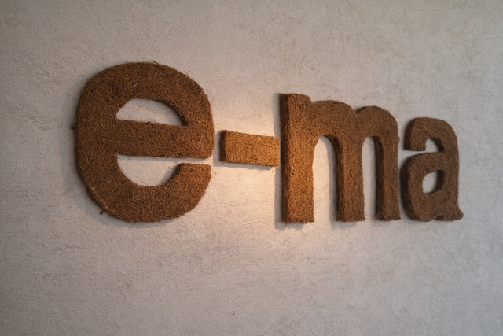
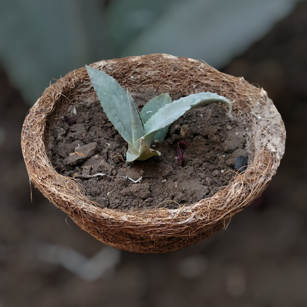
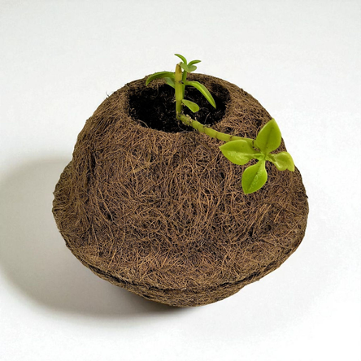
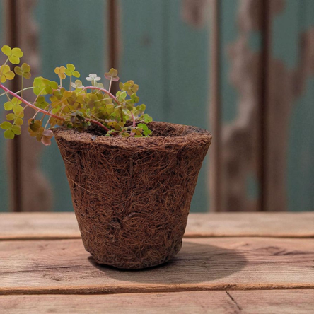

¿Quiénes somos?
En E-MA Orgánicos fabricamos macetas y jardineras de fibra de coco, un material natural, resistente y ecológico. Nacimos con la idea de que cuidar tus plantas también puede ser una forma de cuidar el planeta.
Trabajamos para llevar a hogares, huertos urbanos y proyectos de jardinería en México productos duraderos, con buen diseño y que respetan el medio ambiente.
LO QUE NOS GUÍA
Misión
Ofrecer macetas de fibra de coco de calidad que ayuden a las personas a tener más plantas y más espacios verdes.
Visión
Ser una marca reconocida en México por sus productos naturales, duraderos y amigables con el ambiente.
Valores
Respeto por la naturaleza, calidad en cada pieza, honestidad con nuestros clientes y atención cercana.
NUESTRAS LÍNEAS

Básicas
Macetas sencillas y resistentes para el uso de todos los días.

Kokedama
Una forma natural y decorativa de presentar tus plantas.

Premium
Fibra de coco de mayor grosor para que dure todavía más.